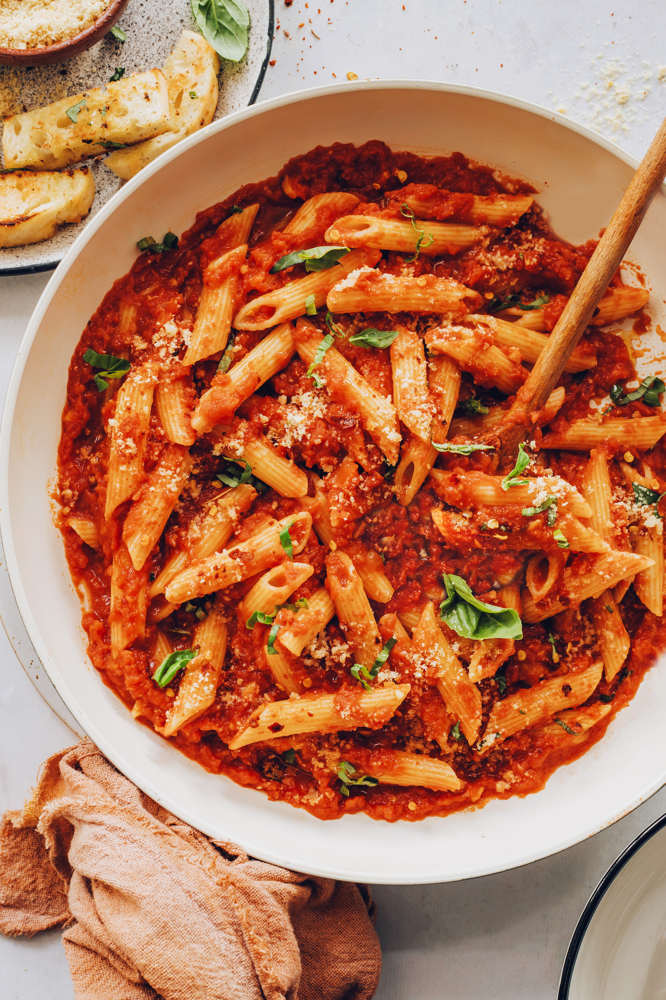

Easy Penne Arrabbiata

What is Arrabbiata?
Arrabbiata is a spicy, tomato-based sauce that originated in the Lazio
region of Italy (near Rome). It’s most commonly served with penne pasta as
a dish called penne all’arrabbiata. And while the word arrabbiata means
“angry” in Italian, eating pasta made with this sauce will make you
anything but angry! Instead, it’s a reference to the spiciness of the
sauce.
Our version strays a bit from the traditional with the additions of maple
syrup and vegan parmesan cheese. It’s balanced and full of flavor yet made
with easily accessible ingredients. For a more authentic version of the
dish, check out this recipe from the lovely Ciao Florentina blog.
Ingredients
Pasta
- Water for boiling
- 1 Tbsp salt (for seasoning the water)
-
10-12 ounces pasta of choice (penne is best // gluten-free as needed)
Sauce
-
2 Tbsp olive oil, plus more for finishing (if oil-free, sub water and
add more as needed as it evaporates)
- 4 cloves garlic, minced
- 2-3 tsp crushed red pepper flakes*, plus more for serving
- 3 Tbsp tomato paste* (organic, high quality when possible)
- 1 (28-ounce) can crushed tomatoes (we prefer Pomi or San Marzano)
- 3 healthy pinches sea salt, plus more to taste
- 2-3 tsp maple syrup, plus more to taste
Steps
- Bring a large pot of well-salted water to a boil for the pasta.
-
Heat a large rimmed skillet or saucepan over medium heat. Once hot, add
olive oil, minced garlic, and crushed red pepper flake (for milder
spice, start with the lesser quantity — for a serious kick, go with the
full amount!). Cook for 1 minute, stirring constantly, and watching
carefully not to let it burn.
-
Add tomato paste and stir into the garlic and red pepper flake (a spoon
or rubber spatula works best). Cook until fragrant and the tomato paste
has darkened slightly — ~2-3 minutes.
-
Add crushed tomatoes, salt, and maple syrup and stir. Bring to a very
low simmer. Cook, covered, for 20-30 minutes, or until the sauce has
reduced slightly and the flavors are deepened.
-
Taste and adjust flavor as needed, adding more salt to taste, red pepper
flake for heat, or maple syrup for sweetness / to balance the spice. A
bit more tomato paste can be added for depth of flavor, but a little
goes a long way. And if the flavors aren’t quite developed, simmer for
just a bit longer (covered) to allow the flavors to deepen.
-
Meanwhile, when the water in the pot boils, add the pasta and stir to
prevent clumps. Cook to al dente according to the package instructions.
Reserve 1/2 cup of pasta water then drain the pasta.
-
Add the cooked pasta to the sauce and stir to coat. If your sauce looks
too thick, add pasta water 2 tablespoons at a time until you have a
silky sauce that clings to the noodles. You likely won’t need all of the
reserved pasta water.
-
Serve as is or garnished with vegan parmesan cheese and fresh basil.
Extra red pepper flakes on top add additional heat and a pop of color.
-
Store leftovers covered in the refrigerator up to 2-3 days, though best
when fresh. Sauce is freezer friendly (when stored separate from the
pasta) for up to 2 months. Reheat pasta on the stovetop, adding a bit of
water to thin as needed.